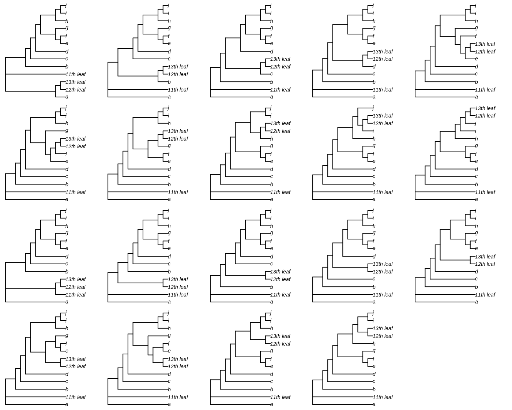

Take an unrooted ten-leaf tree:
The backbone tree has 10 leaves; 17 test trees were generated by adding an clade of three leaves at each of the 17 edges of the unrooted backbone tree.
These are trees T1–T17.
For each of these trees – we’ll consider T1 first – we can then move the eleventh leaf to each of the other edges of the tree, giving trees U1.1-U1.19:

or the cherry containing the twelfth and thirteenth, giving trees V1.1 to V1.19:
Two trees occur in both Ui and Vi, i.e. they can be generated by moving one leaf or moving two leaves. These trees are excluded from further analysis.
We then expect the distance from Ti to Ui.j (i.e. move one tip to a new location) to be less than the distance from Ti to Vi.j (i.e. move two tips to the same location)